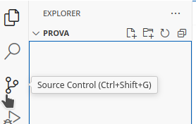
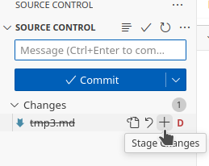
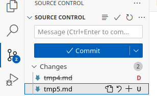

5. El sistema de control de versions distribuit git
El sistema de control de versions git.
Exercicis
Mentre vas realitzant els diferents passos, ves fent una xicoteta guía en markdown del que consideres més important, relacionant-ho amb l'apartat de teoria.
Anota en ella els diferents canvis que vas fent sobre el teu directori de treball.
Primers passos
En aquest apartat, anem a veure com abordar de forma pràctica els conceptes vistos sobre el SCV distribuït git.
Pas 1. Instal·lació
En qualsevol sistema operatiu GNU/Linux basat en Debian/Ubuntu, podem instal·lar git des de la terminal mitjançant l'ordre apt:
Com sempre, en primer lloc, refresquem la llista de paquets:
I després instal·lem el paquet git:
Instal·lació en Windows
Encara que hem utilitzat com a base un sistema operatiu GNU/Linux com Ubuntu, Github també està disponible per a Windows. Podeu descarregar-lo i instal·lar-lo des del lloc Git for Windows o des de la pàgina oficial de git Git SCM, on també estarà disponible per a Mac.
Els passos que indicarem a continuació seran totalment vàlids per a tots aquests sistemes.
Pas 2. Comprovant la versió
Per saber quina versió tenim instal·lada utilitzarem:
Pas 3. Consultant l’ajuda
Si escrivim des de la consola l’ordre git sense arguments, se’ns mostrarà una ajuda amb els paràmetres que aquest suporta, així com les ordres més utilitzades, juntament amb una menuda explicació.
D’altra banda, si volem ajuda d’una ordre concreta de git, utilitzarem:
Amb l’ordre de la qual necessitem ajuda. A més, també podem consultar les pàgines del manual de Git en entorns Linux (man git).
Pas 4. Configurant git
Després d’instal·lar git, necessitarem configurar alguns paràmetres per utilitzar-lo. Per a això, utilitzarem l'ordre git config, que ens permet guardar la configuració a nivell de sistema, d’usuari o de projecte.
Treballarem a nivell d’usuari, de manera que la configuració es guardarà en un directori ocult anomenat .gitconfig de la nostra carpeta personal. En general, per establir un paràmetre a nivell d’usuari, ho farem amb:
mentre que els podrem consultar amb:
Veiem a continuació els diferents paràmetres a configurar en git i com fer-ho:
- Identitat de l’usuari, que es compon del nom i el correu electrònic:
- Editor predeterminat per quan git necessiti que escrivim algun missatge (per exemple el missatge de cada commit). Ací configurem
vim, peò podeu utilitzarnano:
També existeixen altres elements a configurar que ens poden ser d’utilitat:
- Perquè utilitze l'eixida en colors significatius:
- Per indicar a git que realitze conversions entre finals de línia quan treballem en entorns híbrids Linux / Windows / Mac:
Compte!
Amb aquesta opció activada, és possible que quan confirmem un canvi en el repositori ens aparega el següent avís:
warning: LF will be replaced by CRLF in fitxer1.md.
The file will have its original line endings in your working directory
Que indica que es reemplaçaran els finals de línia tipus Linux (LF, Line Feed) pels utilitzats per Windows (CR, Carriage Return i LF, Line Feed). Si no compartirem codi amb usuaris d’altres sistemes operatius i ens molesta aquest avís, podem mantenir l’opció a false.
- Finalment, si volem consultar tota la llista de paràmetres, farem:
Començant a treballar amb repositoris
Per treballar amb un repositori git, el primer que hem de fer és inicialitzar-lo. Per a això, podem, bé clonar un repositori existent, o bé crear-ne un de nou. Per a aquest exemple, crearem un de nou.
Pas 1. Creació i inicialització de la carpeta del projecte
En primer lloc, ens situem en la terminal en el directori on guardarem els projectes, i creem la carpeta del projecte amb:
Ara ens ubiquem dins d’ell:
I inicialitzem ací el repositori:
Com veieu, git ens indica que ha creat un repositori buit.
Si volem veure l’estat del repositori farem:
$ git status
On branch master
No commits yet
nothing to commit (create/copy files and use "git add" to track)
Això ens indica que estem en la branca master, que no hem fet cap commit, i que no hi ha cap pendent.
Si consultem els arxius ocults de la carpeta actual (amb un ls -la), veurem que apareix una carpeta .git, que conté tota la informació sobre el control de versions.
Pas 2. Creació de contingut
Ara crearem un fitxer nou, mitjançant l'ordre touch. Recordeu que l'ordre touch crea un fitxer buit amb el nom que li indiquem, sense necessitat d’obrir-lo amb cap editor per afegir-li contingut.
Amb això hem creat un fitxer buit. Si observem l’estat de git, ens mostrarà:
$ git status
On branch master
No commits yet
Untracked files:
(use "git add <file>..." to include in what will be committed)
fitxer1.md
nothing added to commit but untracked files present (use "git add" to track)
Com veiem, ens marca fitxer1.md com Untracked (sense seguiment), el que significa que aquest fitxer no es troba sota el sistema de control de versions.
Pas 3. Fent el seguiment de l’arxiu
Per fer el seguiment de l’arxiu en el sistema de control de versions, hem d’afegir-lo a aquest mitjançant:
I si ara consultem l’estat del repositori:
$ git status
On branch master
No commits yet
Changes to be committed:
(use "git rm --cached <file>..." to unstage)
new file: fitxer1.md
Podem comprovar com ara fitxer1.md és un fitxer nou en el repositori i que té canvis per confirmar (fer commit). Això ens mostra com l’arxiu ha passat de l’estat sense seguiment a l’estat Preparat, el que significa que serà guardat en el repositori en el següent commit.
Pas 4. Fent el commit del fitxer
Per afegir, ara sí, el fitxer en el repositori, fem el nostre primer commit:
$ git commit -m "Afegint el primer commit"
[master (root-commit) c7e8b82] Afegint el primer commit
1 file changed, 0 insertions(+), 0 deletions(-)
create mode 100644 fitxer1.md
Amb el paràmetre -m especifiquem el missatge associat a aquest commit. En cas de no afegir un missatge en aquest punt, ens obrirà l’editor per defecte per demanar-nos el text del missatge associat.
Fixem-nos que en la primera línia ens mostra el SHA-1 d’aquest commit: c7e8b82.
Si ara fem un git status, veurem que ens diu que no hi ha res per actualitzar, i que el directori de treball està net, és a dir, que el que tenim en el directori de treball es correspon amb el que hi ha al repositori.
També podem veure un registre dels commits amb l’ordre:
$ git log
commit c7e8b82365924bc3a55a8208d38181187f0c1514(HEAD -> master)
Author: Alumne DAM <alumne.dam.ieseljust@gmail.com>
Date: Wed Jun 23 12:45:14 2021 +0200
Afegint el primer commit
O bé de forma més simplificada amb una línia amb:
Exercici 1. Prova a modificar el fitxer i observa els canvis en l'estat. En quin estat es trobarà ara l'arxiu? Què haurem de fer perquè els canvis es reflectisquen en el repositori? Investiga sobre el paràmetre -a de l'ordre git commit i intenta relacionar-lo amb aquest exercici.
En primer lloc, modifiquem el fitxer, bé amb vim o qualsevol altre editor, i comprovem l'estat amb:
$ git status
On branch master
Changes not staged for commit:
(use "git add <file>..." to update what will be committed)
(use "git restore <file>..." to discard changes in working directory)
modified: fitxer1.md
no changes added to commit (use "git add" and/or "git commit -a")
Com veiem, ens indica que el fitxer està en estat de modificat, i que no hi ha cap canvi preparat (staged) per a la propera confirmació. Si féssim ara un commit, les modificacions no es volcarien en el repositori. Per a això, tal com ens indica l’última línia i vam veure en el flux de treball de git, haurem de fer abans un add per afegir aquests canvis al proper commit. Per a això:
$ git add fitxer1.md
$ git commit -m "Modificat fitxer1.md"
[master 0f89bda] Modificat fitxer1.md
1 file changed, 1 insertion(+)
Ara sí que ha incorporat les modificacions del fitxer al repositori. Una altra opció seria utilitzar l’opció -a del git commit. Com ens indica en la documentació:
-a, --all
Tell the command to automatically stage files that have been
modified and deleted, but new files you have not told Git about are
not affected.
Això significa que en el mateix commit, es faran els add corresponents per a tots els fitxers que estigueren en estat de modificat, passant tots ells a preparats (staged), i immediatament incorporats al repositori:
Exercici 2. Crea dos fitxers, anomenats tmp1.md i tmp2.md i afegeix-los dins del repositori, comprovant l’estat en cada pas, i verificant que estan en el repositori.
En primer lloc, crearem, dins del repositori, dos arxius per esborrar posteriorment:
Si comprovem l’estat:
$ git status
On branch master
Untracked files:
(use "git add <file>..." to include in what will be committed)
tmp1.md
tmp2.md
nothing added to commit but untracked files present (use "git add" to track)
Com podem veure, ens indica que aquests dos fitxers no estan sota seguiment. Els afegim amb:
Amb això indiquem que s’afegisquen tots els fitxers del directori en què estiguem. Si fem un git status, veurem com ara es marquen com a preparats (staged):
$ git status
On branch master
Changes to be committed:
(use "git restore --staged <file>..." to unstage)
new file: tmp1.md
new file: tmp2.md
Ara fem el commit:
Git i Visual Studio Code
L'eina Visual Studio Code, com altres IDEs, porta integrat el suport a Git. Anem a veure com utilitzar-lo per gestionar un repositori.
Per a aquest apartat pràctic, ja hem de disposar de git instal·lat i configurat correctament (paràmetres user.name i user.email). Si ho tens ja configurat, anem enllà!
- Inicialització d'un nou repositori
- Crea una nova carpeta per al teu projecte i obre-la amb VSCode.
- Des de la barra d'activitats de l'esquerra, selecciona la icona de control de codi font (Source Control, accessible amb
Shift+Ctrl+G)  -
Fes clic en "Initialize Repository" per inicialitzar un nou repositori Git en aquesta carpeta.
-
Afegint fitxers al repositori
- Crea un nou fitxer anomenat
fitxer1.mdi afegeix-hi algun contingut. - Des de la vista de control de codi font, veuràs que el fitxer apareix com a Untracked.
{kind=link}
{kind=link}
-
Fes clic en el símbol
+al costat del fitxer per afegir-lo a l'àrea de preparació (staging area). -
Fent un commit
- Escriu un missatge de commit en el camp de text de la vista de control de codi font, per exemple, "Afegit fitxer1.md".
-
Fes clic en el símbol de confirmació (check) per fer el commit, o prem
Ctrl+intro -
Modificant fitxers i fent nous commits
- Modifica el contingut de
fitxer1.md. - Afegeix els canvis a l'àrea de preparació i fes un nou commit amb un missatge descriptiu.
Esborrant arxius
L’esborrat d’arxius és una tasca bastant habitual quan treballem en un projecte. Amb git podem eliminar arxius de dues maneres: esborrant l’arxiu en la zona de treball i després en el repositori, o bé esborrar-lo directament en el repositori i provocar el seu esborrat en la zona de treball i preparació.
Per exemplificar això, partirem dels fitxers tmp1.md i tmp2.md creats en l’exercici 2 anterior.
Esborrat local i extensió al repositori
Per a aquest exemple, esborrarem el fitxer tmp1.md creat anteriorment.
Pas 1. Eliminem el fitxer localment, en la zona de treball:
I si ara observem l’estat:
$ git status
On branch master
Changes not staged for commit:
(use "git add/rm <file>..." to update what will be committed)
(use "git restore <file>..." to discard changes in working directory)
deleted: tmp1.md
no changes added to commit (use "git add" and/or "git commit -a")
Ens indica que de moment, l’esborrat no està preparat (staged) per al següent commit. Ací ens indica que podem fer diverses opcions:
git addogit rm, per preparar els canvis per a la següent confirmació,git restoreper descartar els canvis, i deixar l’arxiu original.
Pas 2. Preparem la següent confirmació
I comprovem l’estat:
$ git status
On branch master
Changes to be committed:
(use "git restore --staged <file>..." to unstage)
deleted: tmp1.md
Amb això, en el següent commit es confirmaria l’esborrat en el repositori. Aci encara tenim una opció per desfer l’esborrat, que seria utilitzar git restore --staged tmp1.md, amb el que tornaríem al pas anterior.
Pas 3. Confirmar els canvis
L’últim pas ja és confirmar aquest esborrat en el repositori:
$ git commit -m "Eliminat tmp1.md"
[master 6dc5cad] Eliminat tmp1.md
1 file changed, 0 insertions(+), 0 deletions(-)
delete mode 100644 tmp1.md
```
### Esborrat directament del repositori
En aquesta segona opció veurem com esborrar directament el fitxer del repositori i provocar el seu esborrat en la zona de treball i preparació. Utilitzarem el fitxer `tmp2.md` creat anteriorment.
**Pas 1. Eliminem el fitxer del repositori**
Per eliminar el fitxer del repositori directament, fem:
```bash
$ git rm tmp2.md
Si ara observem l’estat d’aquest fitxer, veurem que ja únicament hem de fer el commit perquè s’aplique l’esborrat.
$ git status
On branch master
Changes to be committed:
(use "git restore --staged <file>..." to unstage)
deleted: tmp2.md
Observeu també que el fitxer ha desaparegut de l’àrea de treball.
Pas 2. Confirmem els canvis
Per confirmar els canvis, com sempre:
Esborrant arxius en VSCode
Veiem com fer l'esborrat de fitxers amb VSCode.
- Crea un fitxer a la carpeta del prjecte (des de terminal o des de VSCode) anomenat
tmp3.mdamb un contingut qualsevol, afig-lo al control de canvis i fes el corresponent commit. - Des de l'explorador de fitxers de VSCode, selecciona el fitxer que vols esborrar i fes clic amb el botó dret del ratolí.
- Selecciona l'opció "Delete" per esborrar el fitxer (o directament prem el botó de suprimir).
- Ves a la vista de Control de codi font, i veuràs que el fitxer apareix com a "Deleted". Fes clic en el símbol
+al costat del fitxer per afegir-lo a l'àrea de preparació (staging area).  - Escriu un missatge de commit en el camp de text de la vista de control de codi font, per exemple, "Esborrat fitxer tmp3.md".
- Fes clic en el boto de confirmació per fer el commit.
{kind=link}
Movent arxius
Per moure o reanomenar fitxers podem utilitzar els dos mateixos mecanismes que per a l’esborrat: primer en el directori de treball i afegint els canvis per al proper commit o fer-ho directament.
Com a pas previ, creem un fitxer que serà el que moguem en el directori de treball, i l’afegim al repositori:
Reanomenat local i extensió al repositori
Pas 1. Reanomenat local
Per reanomenar el fitxer utilitzem l’ordre mv (move), que reanomena el fitxer:
Si observem l’estat del SCV:
$ git status
On branch master
Changes not staged for commit:
(use "git add/rm <file>..." to update what will be committed)
(use "git restore <file>..." to discard changes in working directory)
deleted: tmp_mv.md
Untracked files:
(use "git add <file>..." to include in what will be committed)
tmp_mv_1.md
no changes added to commit (use "git add" and/or "git commit -a")
Com veiem, ens està indicant que s'ha eliminat el fitxer tmp_mv.md, i s'ha creat un fitxer nou, que està sense seguiment, que és tmp_mv_1.md. Bàsicament, una operació de reanomenat podria considerar-se això, un esborrat de l'original, i la creació d'un nou fitxer amb el contingut del primer.
Pas 2. Afegir nous fitxers i canvis al següent commit
Així doncs, ara el que ens queda seria afegir l'esborrat del fitxer en la següent confirmació:
Així com afegir el fitxer nou al control de versions:
Amb això, l’estat del SCV serà:
$ git status
On branch master
Changes to be committed:
(use "git restore --staged <file>..." to unstage)
renamed: tmp_mv.md -> tmp_mv_1.md
Com veiem, ací ja ens indica que s’ha reanomenat el fitxer.
Pas 3. Confirmem els canvis
Per confirmar els canvis:
git commit -m "Reanomenat tmp_mv.md a tmp_mv_1.md"
[master 9913681] Reanomenat tmp_mv.md a tmp_mv_1.md
1 file changed, 0 insertions(+), 0 deletions(-)
rename tmp_mv.md => tmp_mv_1.md (100%)
Reanomenat directe en el repositori
Seguint l’exemple anterior, creem de nou el fitxer tmp_mv.md per reanomenar-lo com tmp_mv_2.md:
Pas 1. Movem directament el fitxer en el SCV
Per reanomenar el fitxer en el SCV, utilitzarem git mv:
Això seria l’equivalent a haver fet el reanomenat de forma local i haver incorporat ja els canvis i arxius generats per al següent commit. Si observem l’estat del SCV:
$ git status
On branch master
Changes to be committed:
(use "git restore --staged <file>..." to unstage)
renamed: tmp_mv.md -> tmp_mv_2.md
Veiem que estem en el pas 2 de l’apartat anterior. Així doncs, només quedaria confirmar aquests canvis.
Pas 2. Confirmant els canvis
$ git commit -m "Reanomenat tmp_mv.md a tmp_mv_2.md"
[master 42803e7] Reanomenat tmp_mv.md a tmp_mv_2.md
1 file changed, 0 insertions(+), 0 deletions(-)
rename tmp_mv.md => tmp_mv_2.md (100%)
Renomenant fitxers en VSCode
Anem a vore com moure fitxers des de VSCode.
- Crea un fitxer
tmp4.mda la carpeta de treball des de VSCode, afig-lo al control de versions i fes el commit corresponents. - En l'explorador de fitxers, fes clic sobre ell amb el botó dret, i seleccoina l'opció "Rename", o directament prem la tecla
F2. - Canvia-li el nom, per exemple a
tmp5.md. - Des de la vista de control de codi font, voràs que el fitxer amb el nom anterior
tmp4.mdapareix com aD - Deleted, i el fitxer amb el nom nou apareix com aU - Untracked. Observa que a la icona d'aquesta vista, ens indica que hi ha dos canvis, no un (és a dir, en lloc d'un renomenat, elimina un fitxer i afig l'altre).  - Fes clic en el símbol
+al costat del fitxer nou per afegir-lo a l'àrea de preparació (staging area) i al fitxertmp3.mdper confirmar l'eliminació del fitxer amb el nom antic. - Escriu un missatge de commit, per exemple, "Reanomenat tmp4.md a tmp5.md".
- Fes clic en el botó de confirmació per fer el commit.
{kind=link}
Desfent canvis entre la zona de preparació i treball
Quan tenim canvis pendents en la zona de preparació (staged), podem desfer-los utilitzant el subcomandament de git checkout.
Per exemple, anem a modificar el fitxer tmp_mv_1.md i afegir-li una línia (utilitzarem l'ordre echo i una redirecció per afegir línies al fitxer):
Si ara consultem l’estat del SCV:
$ git status
On branch master
Changes not staged for commit:
(use "git add <file>..." to update what will be committed)
(use "git restore <file>..." to discard changes in working directory)
modified: tmp_mv_1.md
no changes added to commit (use "git add" and/or "git commit -a")
Veiem que marca el fitxer com a modificat. Si ara el que volem és desfer aquests canvis, tal com ens indica git, podem utilitzar l'ordre git restore fitxer, per restaurar-lo:
L'ordre git restore va aparèixer en la versió 2.23 de git (2019). Anteriorment, s’utilitzava l'ordre git checkout (que podem utilitzar també), utilitzat també per treballar amb diferents branques. Amb la introducció de git restore i git switch en la versió 2.23, es va eliminar aquesta ambigüitat.
Altres operacions d’interès
Ignorant fitxers en git. El fitxer .gitignore.
Moltes vegades no desitgem que certs tipus d’arxius es guarden en el repositori: executables, fitxers comprimits resultats de l’empaquetat, directoris de llibreries, directoris o fitxers amb configuració, contrasenyes o paràmetres de connexió, etc.
Per a això, existeix el fitxer .gitignore, que guardem en la pròpia arrel del directori de treball, i en el qual especifiquem els diferents patrons de noms d’arxiu que no s’inclouran mai en el control de versions.
Aquest fitxer conté diverses línies que seguiran les següents regles:
- Cada línia contindrà un patró.
- S’admeten línies en blanc com a separador per millorar la llegibilitat.
- Els comentaris comencen amb
#. - El prefix
!nega el patró (farà que sí incloguen a git els arxius indicats). - Podem utilitzar el comodí
*per indicar qualsevol cadena de caràcters. - Podem utilitzar la interrogació (
?) per reemplaçar un caràcter qualsevol. - Podem utilitzar expressions regulars tipus
[0-9],[ao].
Veiem un exemple d’aquest tipus de fitxer .gitignore:
# Ignorar els fitxers amb nom temporal_6.txt i temporal_7.zip
temporal_6.txt
temporal_7.zip
# Ignorar els fitxers amb extensió zip, gz, changes o deb:
*.zip
*.gz
*.changes
*.deb
# Ignorar els fitxers amb extensió .log de la carpeta log, així
# com les extensions .log0, .log1, log2...
log/*.log
log/*.log[0-9]
# Ignorar tots els fitxers del directori imatges
imatges/*
# Ignorar tots els fitxers que acaben en 'a' o 'o' de la
# carpeta compilats
compilats/*[ao]
Ara només quedaria afegir aquest fitxer al control de versions i confirmar els canvis.
??? question "Exercici 3. Crea un fitxer .gitignore de manera que s’ignoren tots els fitxers compilats de java. Afegeix-lo al repositori. Posteriorment, crea un fitxer font senzill en Java, compila’l, i prepara tot per confirmar-ho en un commit. Comprova si els fitxers compilats s’han afegit o no.`
Creem en primer lloc el fitxer .gitignore, amb el següent contingut:
Preparem el fitxer per al següent commit i el confirmem:
Ara, creem un fitxer en java, per exemple un Hello.java que siga un Hola Món.
Compilem:
Preparem tot per al següent commit, i veiem com ens indica que s’ignorarà el .class:
$ git add *
The following paths are ignored by one of your .gitignore files:
Hello.class
Use -f if you really want to add them.
Revertir a l’estat d’un commit
Per revertir l’estat d’un commit, utilitzem l'ordre git revert, de la següent manera:
Vegem-ho amb un exemple.
Pas 1. Consultem els diferents commits realitzats:
Tal com ja hem fet anteriorment, per veure els commits realitzats, utilitzem l'ordre git log:
$ git log --oneline
b885874 (HEAD -> master) Added Hello.java
963f385 Added .gitignore
42803e7 Reanomenat tmp_mv.md a tmp_mv_2.md
fd760e3 Afegit tmp_mv.md per al seu segon reanomenat
9913681 Reanomenat tmp_mv.md a tmp_mv_1.md
562aa01 creat tmp_mv.md
a380964 Eliminat tmp2.md
6dc5cad Eliminat tmp1.md
c04b46e Afegits dos fitxers de prova
0f89bda Modificat fitxer1.md
c7e8b82 Afegint el primer commit
Pas 2. Localitzem el commit on es va produir el canvi i el revertim
Si desitgem, per exemple, recuperar el fitxer tmp1.md eliminat en el commit 6dc5cad, farem:
Que ens demanarà un nou missatge per al registre i automàticament crearà un nou commit amb aquest missatge i els canvis aplicats.
Si ara inspeccionem de nou el llistat de commits:
git log --oneline
ed0ed9c (HEAD -> master) Revert "esborrat tmp1"
b885874 Added Hello.java
963f385 Added .gitignore
42803e7 Reanomenat tmp_mv.md a tmp_mv_2.md
fd760e3 Afegit tmp_mv.md per al seu segon reanomenat
9913681 Reanomenat tmp_mv.md a tmp_mv_1.md
562aa01 creat tmp_mv.md
a380964 Eliminat tmp2.md
6dc5cad Eliminat tmp1.md
c04b46e Afegits dos fitxers de prova
0f89bda Modificat fitxer1.md
c7e8b82 Afegint el primer commit
Eliminant arxius no seguits
Podem eliminar els arxius que no estiguen sota el control de versions en el directori de treball mitjançant l’ordre:
Per exemple, si creem tres fitxers:
Si veiem l’estat de git:
git status
HEAD detached at refs/heads/master
Untracked files:
(use "git add <file>..." to include in what will be committed)
f1
f2
f3
nothing added to commit but untracked files present (use "git add" to track)
Podem netejar els fitxers que no estiguen sota control de versions amb:
Si a més volem eliminar també els directoris no utilitzats faríem (suposem que tenim dos directoris buits directory1 i directory2):
Eliminant fitxers no seguits des de VSCode
Per eliminar fitxers que no estan en seguiment podem eliminar-los tant des de l'explorador de fitxers com des del sistema de control de versions.
- Crea un fitxer, anomenat
tmp6.md, i no l'afisques al control de versions.
Amb aquest fitxer, ara podràs:
a. Eliminar-lo directament, des de l'explorador de fitxers, b. Des de la vista del sistema de control de versions, on voràs que s'indica que hi ha un canvi, fent clic al botó Revert, revertiràs l'acció d'haver afegit el fitxer.
{kind=link}
Tant en un com en altre cas, el fitxer serà com si no hagués existit per al control de versions.